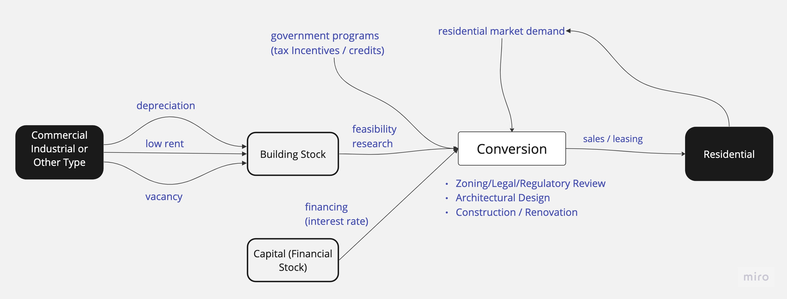
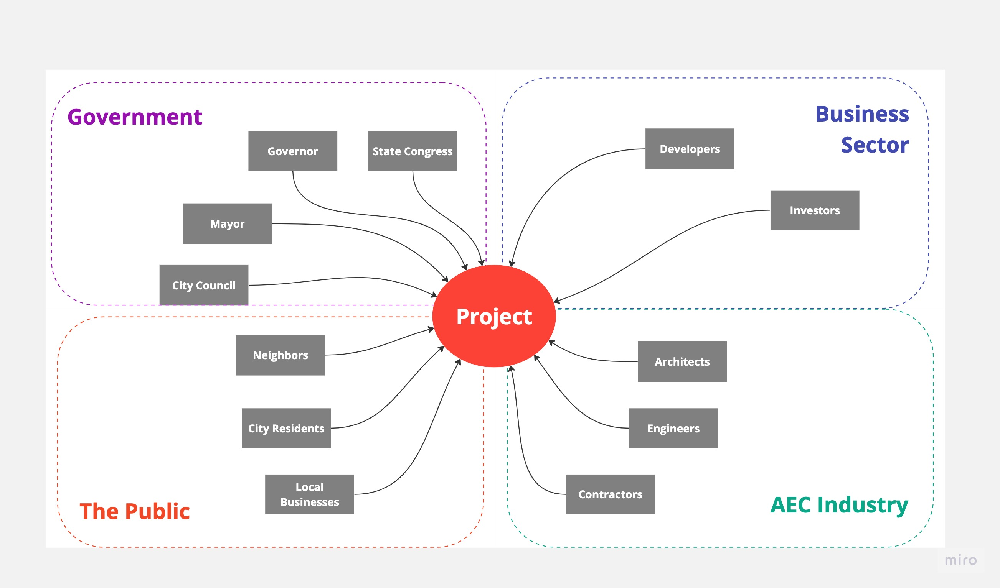

New York City's population is set to grow 8% over the next 17 years.
It is estimated we'll need to create over 500,000 housing units to meet this demand.
And unfortunately, we're already in a housing crisis.

New York City's population is set to grow 8% over the next 17 years.
It is estimated we'll need to create over 500,000 housing units to meet this demand.
And unfortunately, we're already in a housing crisis.
In NYC, more than half of renter households are considered rent-burdened, meaning they pay more more than 30% of their income on rent (NYCHVS).
One solution that addresses both the housing crisis and climate change is the use of converting commercial to residential real estate. This use of real estate conversion can create desperately needed housing and avoid the need for new materials, resources, and energy for the construction industry.
For years, there has been a surge in discourse regarding how cities adapt to external crises that are at once a social, political, and environmental mess. These crises can occur at varying time scales and their responses can have varying degrees of public perception. For example, when the pandemic abruptly imposed constraints on indoor gathering and created stress on people’s social lives and the livelihoods of thousands of restaurants, New York City adapted by enabling opportunities for outdoor seating and transferring control of road and parking space from vehicles to restaurant owners. At a longer time scale, however, many New Yorkers criticize how the city has responded to housing in-affordability and the climate crisis. One solution that addresses both the housing crisis and climate change is the use of converting commercial to residential real estate. This use of real estate conversion can create desperately needed housing and avoid the need for new materials, resources, and energy for the construction industry, which is responsible for 40% of global energy-related Greenhouse Gas emissions.1
> And there's opportunity to convert some of these.
> Due to the pandemic, commercial vacancy rates are hitting an all-time high of 18%.
In fact, Manhattan is already home to some of the most high-profile conversion projects in recent years:
25 Water St is the second-largest office-to-apartment conversion project in U.S. history. It now contains 1,300 units.
credit: NY YIMBYOne Wall St is the second-largest conversion project by unit count. Unfortunately, the building isn't accessible to most people, as the average apartment price is $3 Million.
credit: NY PostSo what does it take to convert a building?...
Stock and Flow diagram of converting non-residential to residential use.
Real estate conversion is a complex endeavor as it depends on many economic, legal, spatial, social and political factors. There are many moving pieces that must be orchestrated such as the building/lot characteristics - zoning, building code, and spatial constraints - financial capital, and stakeholders.
A non-exhaustive stakeholder diagram.
Let’s consider changes are dictated and flows are created in this system. First, to make a conversion happen there needs to be economic incentive or market demand for developers and investors - e.g. pandemic and the shift to work-from-home causing high vacancy rates in an office building. Governments can influence market demand by creating tax incentives. On top of meeting economic incentive, a building needs to meet a slew of zoning and building code requirements. For example in NYC, every legal bedroom needs to have an operable window. This makes pre-war office buildings more suitable for conversion because they were designed with operable windows
(before air-conditioning was a thing) and are typically not as deep as modern curtain-walled office buildings. But building codes and zoning laws are malleable and can be subject to amendment. For example, in 1961 residential floor-area caps and other requirements were waived for existing buildings (this was later amended to include lower manhattan buildings built before 1977). Even if a building meets all legal requirements, there are additional spatial or architectural considerations that may hinder a project and create delays. For example, the locations of structural columns and spacing between windows affects how many units can be built.